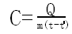

温度：表示物体的冷热程度，单位摄氏度（℃）。
温度计的制作原理：
液体的热胀冷缩。
正常情况下，人的体温约为37℃。
常用液体温度计：
实验室温度计 量程：-10℃ ～ 100℃
体温计 量程：35℃ ～ 42℃
暑寒表 量程：-20℃ ～ 60℃
在一个标准大气压下，纯净的冰水混合物的温度为0℃，水沸腾时的温度为100℃。把0℃～100℃之间划分为100等份，那么每一等份就是1℃；读作 1 摄氏度。
温度计的使用规则：
（1）使用前要观察温度计的量程，估计被测液体的温度是否在量程内。
（2）测量时温度计的玻璃泡应被包围在被测液体内。
（3）测量液体温度时，温度计的玻璃泡应浸没液体中，但不能接触容器壁和容器底。
（4）待温度计内液柱的液面稳定时读取，读取时视线要与液体相平。
（5）体温计用前需甩一甩，可离开被测物体读数。
物态变化
内能与热机
物体内的所有分子无规则运动的动能，以及分子热能的总和叫做物体的内能，内能的国际单位 焦耳，符号‘J’。
分子无规则运动的剧烈程度与温度有关，物体温度越高，分子运动越剧烈，分子动能越大。
物理学中把分子的这种无规则运动叫分子的热运动。
热力学温度单位 开尔文，简称 开，符号‘k’。冰水混合物的热力学温度是273.15k，热力学温度（T）和摄氏温度（t）的换算关系是：
T = 23.15 + t
改变物体内的内能的两种途径：
（1）做功；
（2）热传导条件（热度差）
在热传递过程中，物体间内能传递的多少称为热量，用字母‘Q’表示，常用单位是 焦耳，符号‘J’
实验表明，m = 1kg的水温度升高1℃要吸收热量4.2*103；温度降低1℃要分出热量4.2*103。其中，变化前的温度为t，变化后的温度为t'，及其热容差（c）为：

相同质量的同种物质升高相同的温度吸收的热量相同；
相同质量的不同物质升高相同的温度吸收的热量不同。
内燃机
把燃烧时的内能较变为机械能的装置这种装置称为热机。
燃料直接在发动机气缸内燃烧产生动力的热机叫做内燃机。
汽油机和柴油机的一个工作循环都要经历四个冲程，所以被称为四冲程内燃机。
四冲程内燃机在一个循环中，活塞往复运动两次，气缸内的燃油爆发一次，对外做功一次。
四冲程分别是：
吸气冲程 | 压缩冲程 | 做功冲程 | 排气冲程